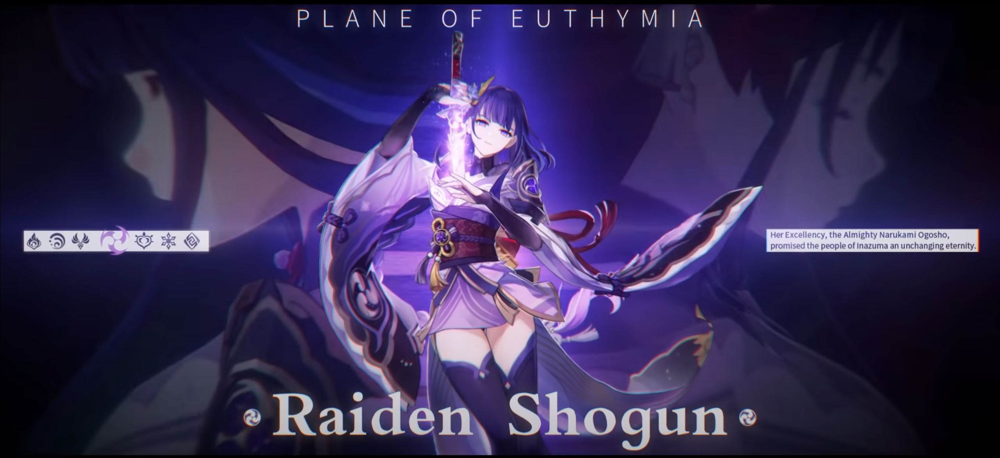
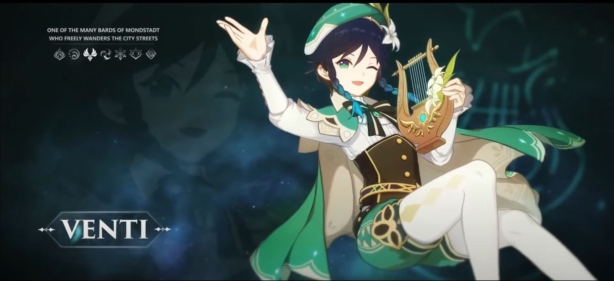

Personajes Favoritos
Zhongli:
Zhongli es un Arconte (Dios) es uno de los personajes más poderosos de Genshin Impact a causa de su propia historia. Usuario del elemento Geo (piedra), utiliza una lanza para hacer frente a los enemigos, siendo un fuerte atacante principal.
Haz Click Aqui Para Ver El Trailer

Shogun Raiden
La Shogun Raiden (en japonés: 雷電 将軍 Raiden Shougun), cuyo nombre real es Ei, es un personaje jugable en Genshin Impact. Ella controla una marioneta mientras medita dentro del Plano de la eutimia. Ella es el recipiente mortal de Beelzebul, la actual Arconte (Diosa) Electro de Inazuma.
Haz Click Aqui Para Ver El Trailer 
Venti
Venti es uno de los personajes que podemos seleccionar en Genshin Impact. Es un bardo de ambiente libre y amante del vino que procede de mondstadt, es el recipiente mortal de barbatos, el cual es el arconte (Dios) Anemo(Viento).
Haz Click Aqui para ver el Trailer 